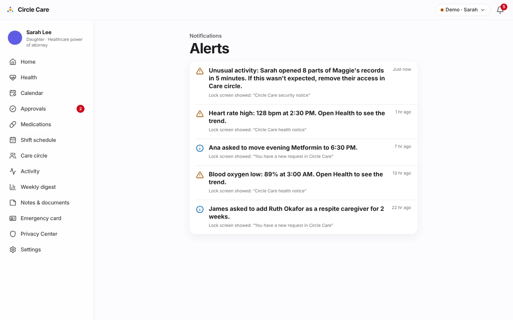

Alerts & notifications¶
Overview¶
What. A rules engine turns time and state into alerts: missed doses, missed check-ins, late caregivers, SOS escalation, stale approvals, suspicious access, unusual health readings and expired access. Each alert has a lock-screen title that never contains health information and an in-app detail shown only after the app is unlocked. Alerts appear as a banner when they arrive and in the Alerts list (bell icon).
Why. Families are buried in messages; health details on a lock screen are a privacy breach waiting to happen. Circle Care is "quiet unless it matters" — and when it speaks, the lock screen says only "You have a reminder from Circle Care."
Business value. Trustworthy, low-noise alerting is what lets the guardian stop calling every day, and PHI-free notification text is a prerequisite for using third-party push and SMS providers.
User journey¶
- Something happens (e.g. a dose passes its threshold). Within 15 seconds the rules engine creates an alert.
- If the recipient has the app open, a banner slides in: Circle Care · now · the lock-screen title, and "Lock-screen text above has no health details. Tap to see more." Critical alerts are red. Banners disappear after 7 seconds.
- Tapping the banner opens the relevant screen.
- The bell shows an unread count. Alerts lists each alert with its in-app detail, "Lock screen showed: "…"", and the age. Alerts are marked read 1.5 seconds after the list opens.

Functional details & business rules¶
Rules engine schedule¶
evaluate(state) in src/data/store.tsx runs every 15 seconds while the app is open and after every change. Alerts are de-duplicated by key, so a rule fires once per condition (per dose slot per day, per SOS step, per 10-minute window for security rules).
Alert catalogue¶
| # | Alert | Rule | To | Severity | Lock-screen title |
|---|---|---|---|---|---|
| 1 | Dose repeat reminder | Unconfirmed dose ≥ 10 min past time | Elder | Info | You have a reminder from Circle Care |
| 2 | Dose — caregiver | ≥ 30 min (15 high-priority) | Caregiver | Warning / Critical* | You have a reminder from Circle Care |
| 3 | Dose — guardian | ≥ 60 min (30 high-priority) | Guardian | Warning / Critical* | Circle Care needs your attention |
| 4 | Check-in — elder | No check-in after window end (10:00) | Elder | Info | You have a reminder from Circle Care |
| 5 | Check-in — guardian | Window end + 15 min | Guardian | Warning | Circle Care needs your attention |
| 6 | Late caregiver | Shift start + 15 min, no check-in | Guardian, caregiver | Warning | Circle Care needs your attention |
| 7 | SOS sent | Elder sends SOS | Guardian, caregiver | Critical | Emergency alert from Circle Care |
| 8 | SOS escalation | Every 2 min until acknowledged | Guardian, caregiver | Critical | Emergency alert from Circle Care |
| 9 | SOS acknowledged | Responder taps I'm on my way | Elder, guardian, caregiver | Info | Update from Circle Care |
| 10 | Approval reminder | Pending > 24 hours | Guardian | Info | You have a reminder from Circle Care |
| 11 | Bulk access | ≥ 8 record views by one person (not the elder) in 5 min | Guardian | Warning | Circle Care security notice |
| 12 | Repeated denials | ≥ 3 refused actions by one person in 10 min | Guardian | Warning | Circle Care security notice |
| 13 | Unusual health reading | Detection rules, only if Maggie shares | Guardian | Warning (high/low) · Info (sudden) | Circle Care health notice |
| 14 | Access expired | expiresOn < today |
— (audit entry only) | — | — |
| 15 | MFA lockout | 5 wrong codes | The person | Warning | Circle Care security notice |
* Critical when the medicine is high-priority.
Action-driven alerts (new requests, decisions, invitations, shift offers, appointments, sharing changes, legal-document review) are listed on each feature page under Notifications.
Lock-screen titles in use¶
| Title | Used for |
|---|---|
| You have a reminder from Circle Care | Reminders to the elder; dose reminders to the caregiver; approval reminders |
| Circle Care needs your attention | Escalations to the guardian (dose, check-in, late caregiver) |
| Emergency alert from Circle Care | SOS |
| Circle Care security notice | Suspicious access, MFA lockout |
| Circle Care health notice | Unusual readings |
| You have a new request in Circle Care | Change, member and swap requests |
| You have a new message in Circle Care | Elder questions and suggestions |
| You have a new shift in Circle Care | Shift offers |
| You have an update in Circle Care | Decisions, escort requests |
| Update from Circle Care | Informational updates |
PHI-free by design (CC-31)
No title names a person's condition, a medicine or a note. Details such as "Lisinopril (08:00) is 70 minutes overdue" appear only inside the app. The same rule applies to the weekly digest email.
Severity¶
| Severity | Icon / colour | Meaning |
|---|---|---|
| Critical | Siren, red banner | SOS, high-priority dose escalation. Should break through silent mode when Emergencies break through silent mode is on |
| Warning | Triangle, orange | Needs attention soon |
| Info | Info, blue | For awareness |
Guardian delivery settings (CC-63)¶
| Setting | Default | Prototype effect |
|---|---|---|
| Push / Text messages / Email | On / On / Off | Stored only |
| Quiet hours | On, 22:00–07:00 — "Non-urgent alerts wait until morning" | Stored only |
| Emergencies break through silent mode | On | Stored only |
Permissions & privacy¶
- Alerts are addressed to personas (
elder,caregiver,guardian), not to individual members, because the demo has one app per persona. - Security alerts go only to the guardian. Health alerts go only to the guardian and only while Maggie shares readings.
- The access log and alerts never contain health values; health-alert details show the reading inside the app only.
Notifications¶
This page is the notification reference; see the catalogue above.
Accessibility¶
- Banners are announced through an
aria-live="assertive"region. - The bell has an accessible name including the unread count ("Notifications, 4 unread").
- Severity is shown by icon and text, not colour alone.
Data captured¶
| Field | Meaning |
|---|---|
id, key? |
Identity and de-duplication key |
at |
Created time |
to[] |
Recipient personas |
title |
Lock-screen text (PHI-free) |
detail |
In-app text |
severity |
info · warning · critical |
read[] |
Personas that have read it |
link? |
Screen to open |
Edge cases & error states¶
| Situation | Behaviour |
|---|---|
| Rule condition persists | No repeat alert (same key) |
| Alerts created before the screen opened | No banner; they are in the Alerts list |
| Elder taps a banner | Always routed to an elder screen |
| Presenter skips time ahead | All time-based rules re-evaluate immediately |
| No alerts | "You're all caught up." |
Test coverage¶
| Type | Test |
|---|---|
Unit — rules.test.ts |
Escalates a missed dose to the caregiver, then the guardian · does not repeat the same alert · missed check-in prompts the elder first, then the guardian 15 minutes later · flags bulk record viewing · flags repeated denials · reminds the guardian about requests older than a day · ends time-limited access automatically |
Unit — health.test.ts |
Detection rules for alerts 13 |
| E2E | CC-35 suspicious access alerts the guardian · CC-64 24-hour approval reminder · CC-86 a sudden heart-rate change alerts the guardian · Missed dose escalates… |
| Gaps | No unit tests for late-caregiver or SOS-escalation alerts |
Known limitations & production gaps¶
| In the prototype | In production (planned) |
|---|---|
| Rules run in the browser, only while a tab is open | Server-side scheduler with idempotent jobs |
| Banners only | Push (APNs/FCM) with iOS critical-alert entitlement, SMS and email via BAA-covered vendors (R2) |
| Channels, quiet hours and critical bypass not enforced | Delivery policy per person and severity |
| Alerts addressed to personas | Addressed to members, with per-member preferences |
| English only | Translated notifications (R2 Language Access) |
| Fixed security thresholds | Tuned anomaly detection and security-team escalation |